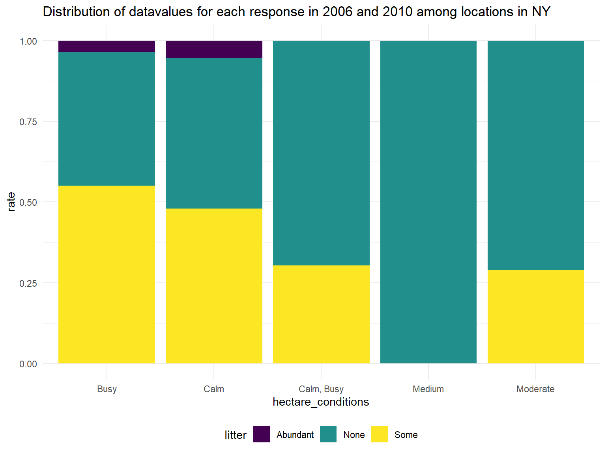

hectare = read_csv("./data/2018_Central_Park_Squirrel_Census_-_Hectare_Data.csv") %>%
janitor::clean_names()## Parsed with column specification:
## cols(
## Hectare = col_character(),
## Shift = col_character(),
## Date = col_double(),
## X4 = col_double(),
## `Sighter Observed Weather Data` = col_character(),
## Litter = col_character(),
## `Litter Notes` = col_character(),
## `Other Animal Sightings` = col_character(),
## `Hectare Conditions` = col_character(),
## `Hectare Conditions Notes` = col_character(),
## `Number of sighters` = col_double(),
## `Number of Squirrels` = col_double(),
## `Total Time of Sighting` = col_double()
## )skimr::skim(hectare)## Skim summary statistics
## n obs: 700
## n variables: 13
##
## -- Variable type:character -------------------------------------
## variable missing complete n min max empty n_unique
## hectare 0 700 700 2 3 0 351
## hectare_conditions 40 660 700 4 10 0 5
## hectare_conditions_notes 626 74 700 2 92 0 74
## litter 90 610 700 4 8 0 3
## litter_notes 694 6 700 9 21 0 6
## other_animal_sightings 32 668 700 4 87 0 263
## shift 0 700 700 2 2 0 2
## sighter_observed_weather_data 19 681 700 4 65 0 498
##
## -- Variable type:numeric ---------------------------------------
## variable missing complete n mean sd p0
## date 0 700 700 1e+07 43287.31 1e+07
## number_of_sighters 0 700 700 1.14 0.39 1
## number_of_squirrels 0 700 700 4.32 3.56 0
## total_time_of_sighting 20 680 700 24.91 6.92 1
## x4 0 700 700 726143.54 1.1e+07 1
## p25 p50 p75 p100 hist
## 1e+07 1e+07 1e+07 1e+07 <U+2587><U+2583><U+2583><U+2587><U+2583><U+2581><U+2585><U+2582>
## 1 1 1 3 <U+2587><U+2581><U+2581><U+2581><U+2581><U+2581><U+2581><U+2581>
## 2 4 6 23 <U+2587><U+2587><U+2585><U+2582><U+2581><U+2581><U+2581><U+2581>
## 20 24 26 70 <U+2581><U+2581><U+2587><U+2582><U+2581><U+2581><U+2581><U+2581>
## 80 155 240 1.8e+08 <U+2587><U+2581><U+2581><U+2581><U+2581><U+2581><U+2581><U+2581>litter,
numextract <- function(string){
str_extract(string, "\\-*\\d+\\.*\\d*")
}
hectare =
hectare %>%
mutate(
temperature_fahrenheit = numextract(sighter_observed_weather_data),
rate = number_of_squirrels/total_time_of_sighting
)temperature_df =
hectare %>%
filter(temperature_fahrenheit > 29) %>%
mutate(
temperature_fahrenheit = recode(temperature_fahrenheit, `-50` = "50"),
temperature_category = ifelse(temperature_fahrenheit <= "50", "below 50",
ifelse("50"< temperature_fahrenheit & temperature_fahrenheit<= "60", "50-60",
ifelse("60"< temperature_fahrenheit & temperature_fahrenheit<= "70", "60-70",
ifelse("70"< temperature_fahrenheit, "above 70","others")))),
temperature_category = as.factor(temperature_category)
) %>%
mutate(temperature_category=forcats::fct_relevel(temperature_category,c("below 50","50-60","60-70","above 70")))%>%
plot_ly( y = ~rate, color = ~temperature_category, type = "box", colors = "Set3")
temperature_dfplot_condition_litter =
hectare %>%
select(hectare_conditions, litter,rate) %>%
na.omit()%>%
mutate(
hectare_conditions=as.factor(hectare_conditions),
hectare_conditions=forcats::fct_relevel(hectare_conditions,c("Calm","Calm, Busy","Medium","Moderate","Busy")))%>%
ggplot(aes(x = hectare_conditions, y = rate, fill = litter)) +
geom_bar(stat = "identity", position = "fill") +
labs(
title = "Distribution of datavalues for each response in 2006 and 2010 among locations in NY"
)
plot_condition_litter 
sunburst =
hectare %>%
select(hectare_conditions, litter, rate) %>%
na.omit() %>%
mutate(
rate = round(sunburst$rate,digits = 2)
) %>%
df =
sunburst %>%
group_by(hectare_conditions, rate) %>%
summarize(
sum = sum(rate)
)## Error in eval(lhs, parent, parent): object 'sunburst' not foundp <- plot_ly(
labels = c("Eve", "Cain", "Seth", "Enos", "Noam", "Abel", "Awan", "Enoch", "Azura"),
parents = c("", "Eve", "Eve", "Seth", "Seth", "Eve", "Eve", "Awan", "Eve"),
values = c(10, 14, 12, 10, 2, 6, 6, 4, 4),
type = 'sunburst'
)temperature = hectare %>% filter(temperature_fahrenheit > 29) %>% select(sighter_observed_weather_data, temperature_fahrenheit) %>% na.omit() count(temperature, temperature_fahrenheit) %>% view()
levels(as.factor(hectare\(temperature_fahrenheit)) levels(as.factor(hectare\)litter)) ## Abundant, None, Some. levels(as.factor(hectare$hectare_conditions)) # “Busy”“Calm”“Calm, Busy” “Medium” “Moderate”
>
separate(date, into = c(‘day’,‘year’), sep = 4) %>% separate(day, into = c(‘month’,‘date’), sep = 2) %>%
sum = hectare %>% group_by(date) %>% summarise( sum = sum(number_of_squirrels) )
clean = hectare %>% select(sighter_observed_weather_data) %>% mutate( weather = gsub(“[^a-zA-Z]”, "",hectare$sighter_observed_weather_data) )
rainy = clean %>% filter(str_detect(weather, “ain”)) %>% mutate( weather = “Rainy” )
sunny = clean %>% filter(str_detect(weather, “un”)) %>% mutate( weather = “Sunny” )
levels(as.factor(hectare$sighter_observed_weather_data))
```
numextract <- function(string){
str_extract(string, "\\-*\\d+\\.*\\d*")
}
mutate(
Weather = ifelse(str_detect(sighter_observed_weather_data,c("sun", "Sun")) == "TRUE", "Sunny",
ifelse(str_detect(sighter_observed_weather_data,c("cloud", "Cloud")) == "TRUE",
"Cloudy",
ifelse(str_detect(sighter_observed_weather_data,c("Windy", "wind")) == "TRUE", "Windy",
"Others")))
) %>% ## Error: <text>:11:0: unexpected end of input
## 9: "Others")))
## 10: ) %>%
## ^